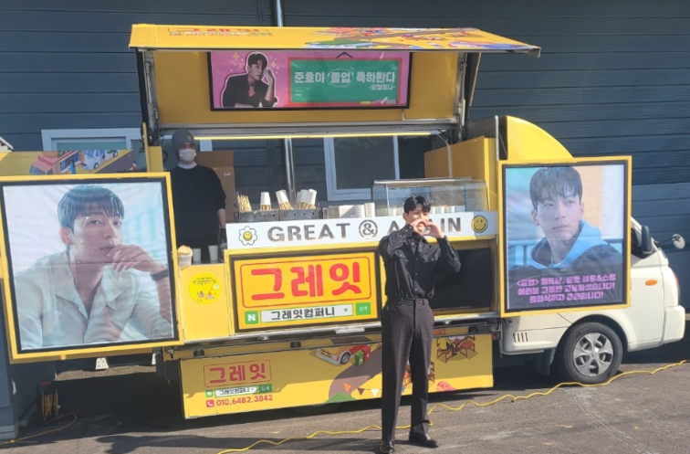
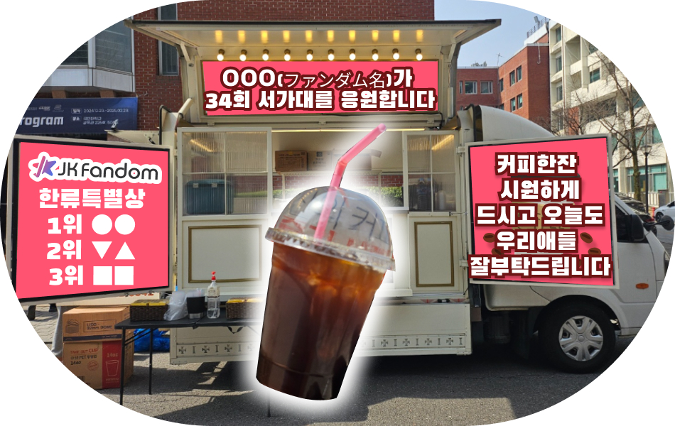

最新情報は公式X・限定情報は公式LINE
こちらからフォロー＆お友だち登録
こちらからフォロー＆お友だち登録


#JKFD限定 #韓流特別賞
#34th SEOUL MUSIC AWARDS
#コーヒーカー
本キャンペーンは
「34th SEOUL MUSIC AWARDS」
本選2次の【韓流特別賞】
において条件をクリアした場合
1位に輝いたアーティストに
コーヒーカーをサポートします！
🏅サポート内容
☕「JKFDコーヒーカー」を出店!!
《コーヒーカーを届けるメリット》
ファンの皆さんの
・応援する気持ちを直接届ける
・存在の大きさを伝える
・コンサート会場を盛り上げる
ことができるキャンペーンです。

※イメージです
2025/6/21（土）に開催される「34th SEOUL MUSIC AWARDS」の会場において、JKFDからの本選2次「韓流特別賞」で1位となったアーティストのファンダム名義で参加アーティスト・運営スタッフ向けにコーヒーカーを出店し無料配布します。
SMA本選2次
「韓流特別賞」はこちら
👑条件・対象
①「JK Fandom（JKFD）」からの投票
② 本選2次の「韓流特別賞」で単独1位
③ 得票数が3,000票以上
3つの条件を満たすアーティストが対象です。
※同数の場合は先に最高投票数に到達したアーティストが対象となります。
※JKFDからの本選2次「韓流特別賞」における投票数が有効です。本選1次の投票数・その他サイト経由の投票数は対象外です。
🚚配布内容
コーヒーを先着200名に配布

※イメージです
開催当日、会場のインスパイアアリーナで関係者向けに提供いたします。
※配布対象は運営スタッフおよび出演アーティストになります。一般の方はご利用いただけません。予めご了承ください。
📷実施報告
公式Xにて公開
配布状況はJKFD公式Xにて共有予定です。
SMA本選2次
「韓流特別賞」はこちら
📢JK Fandom（JKFD）限定
本施策はJKFD限定のキャンペーンです。
投票の対象もJKFDから行われた本選2次の「韓流特別賞」の投票数のみが対象です。つまり日本からの応援数が影響されます!!
🗾海外投票が100％
「韓流特別賞」は海外（韓国国外）からの投票のみで選出されます。
つまりJKFDからの投票が重要になる部門になります。そのため、本選2次投票における「韓流特別賞」を対象に、JKFDからの得票数1位がReward対象になります!!
⏰投票について
本選2次の投票締切は2025/5/10（土）23:59までです。
23:59の時点で投票が行えなくなります。また投票締切日は混雑が予想されることから時間に余裕をもって投票をお願いいたします。
・アクセス過多などにより投票が行えなかった場合でも事後の追加投票などは行えません。
✅注意事項
・本キャンペーンはJKFDが独自に行うものです。本キャンペーンに関するお問い合わせはJKFDまでご連絡ください。
・現地会場の状況に応じて提供方法が変更になる場合があります。
SMA本選2次
「韓流特別賞」はこちら
※JK Fandomは「34th SEOUL MUSIC AWARDS」の公式投票パートナーです